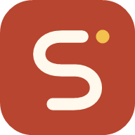

StudyFlowמדיניות פרטיות
עודכן לאחרונה: 25 באוקטובר 2026
- שומרים רק את מה שצריך כדי שהאפליקציה תעבוד: המייל שלך ומה שאתה מכניס לתכנון.
- לא מוכרים מידע, אין פרסומות, אין מעקב לצורכי פרסום, ואין בינה מלאכותית שקוראת את המידע שלך.
- כל אחד רואה רק את המידע שלו. אפשר להוריד אותו או למחוק את הכול מתוך האפליקציה, בכל רגע.
- המידע נשמר בשרתים באירופה, ועובר רק לספקים שמפעילים את השירות, ורק במה שהם צריכים.
1. מי אחראי על המידע
StudyFlow מופעלת בישראל על ידי צוות StudyFlow ("אנחנו"). אנחנו אחראים על המידע שנשמר באפליקציה. לכל שאלה או בקשה בנושא פרטיות: studyflow.app11@gmail.com.
המדיניות הזו חלה על האפליקציה StudyFlow, באתר ובחנויות האפליקציות, ועל מדיניות זו חלים דיני מדינת ישראל, ובכלל זה חוק הגנת הפרטיות, התשמ״א־1981.
2. איזה מידע נשמר
| סוג המידע | מה בדיוק | מאיפה מגיע |
|---|---|---|
| פרטי החשבון | כתובת מייל. בכניסה עם Google, גם השם ותמונת הפרופיל שבחשבון Google, ומזהה החשבון. סיסמה לא נשמרת אצלנו, כי אין סיסמה. | ממך, או מ־Google כשבוחרים "המשך עם Google" |
| התכנון שלך | השם שבחרת, תחומי העניין (לימודים, עבודה, מטרות), מערכת השעות, קורסים, נושאי לימוד, מבחנים והגשות, משימות ואירועים, מטרות אישיות ומה שעשית בהן, והעדפות היום | ממך |
| עבודה ושכר | מקומות עבודה, שכר לשעה, משמרות, הפסקות, טיפים, יעד חודשי, וחישובי הכנסה שנגזרים מהם | ממך |
| הערות חופשיות | מה שכתבת בשדה "הערה" או בשמות של פריטים | ממך |
| שימוש באפליקציה | הימים שבהם עדכנת משהו (בשביל "רצף הימים"), מתי התכנון השתנה לאחרונה, ומועד ההסכמה לתנאים ולמדיניות | נוצר אוטומטית |
| מידע טכני | כתובת IP, סוג הדפדפן או המכשיר, ומועדי כניסה ויציאה, ביומני האבטחה של ספקי השירות | נוצר אוטומטית בכל חיבור |
מה לא נאסף: מיקום, אנשי קשר, תמונות, הקלטות קול, מידע מחשבון ה־Google מעבר למה שנכתב למעלה, ועוגיות של פרסום או מעקב.
מידע רגיש: אל תכתוב בהערות או בשמות של פריטים מידע רפואי, פרטי תשלום, סיסמאות או מידע על אנשים אחרים. האפליקציה לא צריכה אותו.
3. למה המידע נשמר
- כדי שהאפליקציה תעבוד: להציג את השבוע, למצוא זמן פנוי, לחשב שכר משוער ולהראות התקדמות.
- כדי שהמידע יהיה שלך בכל מכשיר: עותק נשמר בחשבון, כך שבכל טלפון או מחשב שמתחברים הכול שם.
- כדי להכניס אותך לחשבון: שליחת קוד כניסה למייל, או כניסה עם Google.
- כדי לשמור על השירות בטוח: למנוע ניסיונות פריצה ושימוש לרעה, ולתקן תקלות.
- כדי לענות לך כשאתה פונה אלינו.
לא משתמשים במידע לפרסום, לא מוכרים אותו, לא בונים עליך פרופיל שיווקי, ולא מקבלים עליך החלטות אוטומטיות.
4. איפה המידע נשמר ומי נוגע בו
המידע נשמר בשני מקומות: במכשיר שלך, ובחשבון שלך בשרתים של Supabase באירופה (פרנקפורט, גרמניה). בנוסף, כמה ספקים מפעילים חלקים מהשירות ורואים רק את מה שהם צריכים:
| ספק | בשביל מה | מה הוא רואה | איפה |
|---|---|---|---|
| Supabase | החשבון ושמירת התכנון | פרטי החשבון, התכנון, מידע טכני | אירופה (גרמניה) |
| כניסה עם Google, ושליחת מייל עם קוד הכניסה (דרך Gmail) | המייל שלך, ותוכן מייל הכניסה | ארה״ב ומדינות נוספות | |
| Google Fonts | הגופנים של האפליקציה | כתובת IP ופרטי דפדפן, כשהגופן נטען | ארה״ב ומדינות נוספות |
| GitHub ו־Vercel | אחסון האתר והאפליקציה | כתובת IP ופרטי דפדפן, ביומני הגישה. לא את התכנון. | ארה״ב ומדינות נוספות |
| Google או Apple | זיהוי דיבור, רק כשלוחצים על המיקרופון | הקול שלך, לפי המדיניות שלהם. אנחנו מקבלים רק את הטקסט. | לפי הספק |
חלק מהספקים נמצאים מחוץ לישראל, ולכן חלק מהמידע עובר לחו״ל. אנחנו עובדים רק עם ספקים גדולים ומוכרים שמחויבים לשמור על המידע, ומשתמשים בכל אחד מהם רק לצורך שלשמו הוא נמצא כאן.
מעבר לזה, נמסור מידע רק אם החוק מחייב אותנו (למשל צו של בית משפט), או כדי להגן על בטיחות של אדם.
5. מה נשמר בטלפון או במחשב שלך
כדי שהאפליקציה תעבוד מהר וגם בלי אינטרנט, נשמרים במכשיר: עותק של התכנון, אישור הכניסה לחשבון, וקבצי האפליקציה. זה נשמר באחסון של הדפדפן (לא בעוגיות). כשמתנתקים מהחשבון, התכנון נמחק מהמכשיר ונשאר רק בחשבון.
6. אבטחת המידע
- כל המידע עובר בחיבור מוצפן (HTTPS).
- כל משתמש יכול לקרוא ולשנות רק את המידע שלו. ההפרדה נאכפת בשרת עצמו, לא רק באפליקציה.
- אין סיסמאות שאפשר לגנוב: נכנסים עם קוד חד־פעמי במייל או עם Google.
- הגישה לניהול השרת מוגבלת למפעיל בלבד.
שום מערכת לא מאובטחת לגמרי. אם יקרה אירוע אבטחה שפוגע במידע שלך, נודיע לך ולרשות להגנת הפרטיות, כפי שהחוק דורש.
7. כמה זמן המידע נשמר
- החשבון והתכנון: כל עוד החשבון קיים.
- מחיקת חשבון: מוחקת מיד מהשרת את החשבון ואת כל התכנון. עותקים ביומנים ובגיבויים של ספקי השירות נמחקים לפי לוחות הזמנים שלהם, בדרך כלל תוך כמה שבועות.
- פניות במייל נשמרות כל עוד הן נחוצות כדי לטפל בהן.
8. הזכויות שלך
- לראות ולהוריד את כל המידע: "החשבון שלי" ← "הורדת המידע שלי".
- לתקן כל דבר: ישירות באפליקציה.
- למחוק את החשבון ואת כל המידע: "החשבון שלי" ← "מחיקת החשבון". המחיקה מיידית ולא ניתנת לביטול.
- לבקש עיון, תיקון, מחיקה או מידע על השימוש במידע שלך במייל studyflow.app11@gmail.com. נענה תוך 30 יום לכל היותר.
- אם לדעתך לא טיפלנו כראוי במידע שלך, אפשר לפנות גם לרשות להגנת הפרטיות.
9. ילדים ובני נוער
אין באפליקציה תוכן לא מתאים, פרסומות, רכישות או אפשרות לתקשר עם משתמשים אחרים.
- מתחת לגיל 13: משתמשים באפליקציה רק באישור של הורה או אפוטרופוס, וההורה הוא שמאשר את התנאים ואת המדיניות. ההורה יכול בכל עת לבקש לראות את המידע או למחוק אותו.
- מגיל 13 עד 18: מומלץ שההורים יכירו את האפליקציה ואת המדיניות הזו.
- אם נגלה שילד מתחת לגיל 13 נרשם בלי אישור הורה, נמחק את החשבון.
10. מיילים
נשלח לך רק מיילים שנחוצים לשירות: קוד כניסה, והודעות חשובות על החשבון או על שינוי במדיניות. מיילים של עדכונים או פרסום יישלחו רק אם תסכים לכך במפורש, ותמיד יהיה אפשר להפסיק לקבל אותם.
11. שינויים במדיניות
אם המדיניות תשתנה, הגרסה החדשה תופיע כאן עם תאריך העדכון. בשינוי מהותי, למשל סוג מידע חדש או ספק חדש, נבקש את האישור שלך מחדש באפליקציה לפני שתמשיך.
12. יצירת קשר
לכל שאלה, בקשה או תלונה: studyflow.app11@gmail.com.